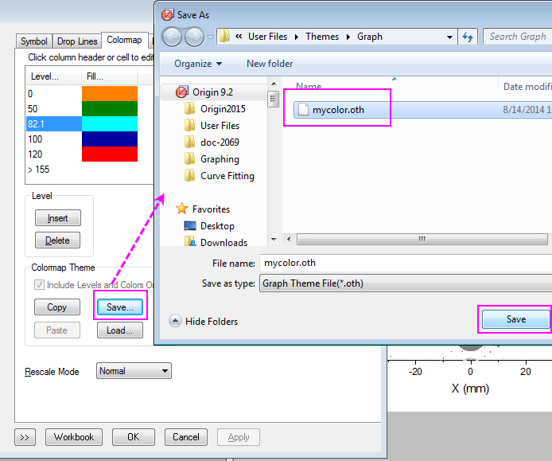

Symboldiagramm mit Größe und Farbabbildung aus anderen Spalten
Zusammenfassung
Dieses Tutorial zeigt Ihnen, wie Sie ein Symboldiagramm mit Größe und Farbe aus anderen Spalten erstellen.
Dieses Diagramm zeigt ein Symboldiagramm der Daten aus mehreren Spalten an, wobei die Größe und Farbe des Symbols aus anderen Datenspalten der Arbeitsblätter abgeleitet wurden. Es wurde eine benutzerdefinierte Farbabbildung auf das Diagramm angewendet.

Origin-Version mind. erforderlich: 2016 SR0
Was Sie lernen werden
Dieses Tutorial zeigt Ihnen, wie Sie:
- die Größe und Farbe der Zeichnungssymbole mit den Werten aus den Arbeitsblattspalten steuern,
- die benutzerdefinierte Farbabbildung festlegen,
- die Gitternetzlinien für das Diagramm bearbeiten.
Symboldiagramm mit Größe und Farbabbildung aus anderen Spalten erstellen
Dieses Tutorial basiert auf dem Projekt Tutorial Data: <Origin-Verzeichnis>\Samples\Tutorial Data.opj.
- Öffnen Sie das Projekt Tutorial Data und navigieren Sie zu dem Ordner Symbol Plot with Size and Color Mapping im Projekt Explorer.
- Markieren Sie die Spalten Col(X) und Col(Y) im ersten Blatt der Arbeitsmappe und klicken Sie auf Zeichnen: Einfache 2D: Punktdiagramm, um ein Punktdiagramm zu erstellen.
- Klicken Sie bei aktivem Diagramm auf Grafik: Layerinhalt im Hauptmenü und wählen Sie alle Spalten mit den Langnamen Y, Y1 und Y2 und fügen Sie sie in das rechte Bedienfeld ein. Klicken Sie auf die Schaltfläche Gruppierung aufheben, um die Gruppierung aller Datensätze aufzulösen. Klicken Sie auf OK, um den Dialog zu schließen. Die Ordnung und Menge der Spaltenlangnamen, die im rechten Bedienfeld aufgelistet sind, sollte exakt dem Diagramm entsprechen. Verwenden Sie die Pfeile für Nach oben und Nach unten, um die Position anzupassen, und verwenden Sie die Schaltfläche
 , um repetitive Elemente zu entfernen.
, um repetitive Elemente zu entfernen.
- Klicken Sie doppelt auf das Punktdiagramm, um den Dialog Details Zeichnung zu öffnen, gehen Sie zur Registerkarte Symbole, setzen Sie nacheinander das Symbol für jede Zeichnung, wie im Bild unten zu sehen. Klicken Sie nach jeder Einstellung auf Übernehmen, um eine teilweise Speicherung durchzuführen.
- Die nächsten 7 Schritte führen die Symboleinstellung für jede Datenzeichnung durch. Symboleinstellung für Datenzeichnung 1:
- Symboleinstellung für Datenzeichnung 2:
- Symboleinstellung für Datenzeichnung 3:
- Symboleinstellung für Datenzeichnung 4
Fügen Sie eine Beschriftung für Datenzeichnung 4 hinzu.
- Symboleinstellung für Datenzeichnung 5
Fügen Sie eine Beschriftung für Datenzeichnung 5 hinzu.
- Symboleinstellung für Datenzeichnungen 6 und 7, die als Legende dienen:
- Klicken Sie auf OK, um den Dialog zu schließen. Klicken Sie doppelt auf die X-Achse, um den Dialog Achsen zu öffnen, und setzen Sie die Skalierung für Horizontal und Vertikal auf Von -50 Bis 50 mit dem gleichen Stil für große und kleine Hilfsstriche:
. Klicken Sie dann auf OK, um die Einstellungen anzuwenden. Sie sollten ein Diagramm wie folgendes erhalten:

Farbabbildung und Legende festlegen
- Die Randfarbe der Zeichnungen post-Electrical Open und pre-Electrical Open basiert jeweils auf Map:Col(C). Im Weiteren nehmen Sie einige Stileinstellungen für die Farbskala auf der Registerkarte Farbpalette vor. Klicken Sie auf Ebene, um den Dialog Ebenen festlegen zu öffnen. Legen Sie die Ebenen auf die Werte 0 bis 155 mit Hauptebenen von 5 fest.
- Klicken Sie doppelt auf jeden Ebenenwert, um ihn zu bearbeiten. Klicken Sie ebenfalls doppelt auf jede Füllfarbe, um sie zu bearbeiten:
Klicken Sie auf Anwenden, um diese Farbeinstellungen auf das Diagramm (Punktdiagramm post-Electrical Open) anzuwenden. - Die Einstellungen sollen nun als ein Design mit dem Namen mycolor.oth gespeichert werden. Das Design wird auf das Punktdiagramm post-Electrical Open angewendet.

Wenden Sie das Design auf das Punktdiagramm pre-Electrical Open an.
Klicken Sie auf OK, um das Fenster zu schließen. - Klicken Sie auf Grafik: Legende: Datenzeichnung im Hauptmenü. Es wird eine Legende in dem Diagramm angezeigt. Klicken Sie mit der rechten Maustaste auf die Legende und dann auf Einstellungen in der Liste. Bearbeiten Sie den Inhalt des Dialogs Objekteigenschaften entsprechend dem Bild unten und klicken Sie dann auf OK.
- Klicken Sie auf Einfügen: Farbskala im Hauptmenü. Es wird eine Farbskala in dem Diagramm angezeigt.
Weitere Schritte der benutzerdefinierten Anpassung
- Wählen Sie im Hauptmenü Format: Layer, um den Dialog Details Zeichnung zu öffnen, gehen Sie zur Registerkarte Größe und Performance und bearbeiten Sie den Layerbereich wie folgt:
- Gehen Sie zur Registerkarte Anzeige im Dialog Details Zeichnung, setzen Sie Ränder beschneiden (%) auf -2% und klicken Sie auf OK, um den Dialog zu schließen.
- Kopieren Sie die vorherige Legende und fügen Sie sie in das Diagramm ein. Bearbeiten Sie die neue Legende folgendermaßen:
Klicken Sie auf OK, um den Dialog zu schließen. - Klicken Sie doppelt auf die Farbskala, um die Steuerung der Farbskala zu öffnen, gehen Sie zur Seite Ebenen und aktivieren Sie Erste und letzte Ebene ausblenden. Gehen Sie dann zur Seite Beschriftungen und setzen Sie die Anzeige, wie unten zu sehen:
Fügen Sie den Titel Elapsed Time für die Farbskala auf der Registerkarte Titel hinzu. Klicken Sie auf OK, um die Einstellungen anzuwenden. - Klicken Sie doppelt auf die Achse, um den Dialog Achsen zu öffnen. Legen Sie die Gitternetzlinien für Horizontal und Vertikal auf der Registerkarte Gitternetze entsprechend dem Bild unten fest:
Klicken Sie auf OK, um die Einstellung anzuwenden, und schließen Sie den Dialog. - Fügen Sie als Letztes den Text "symbol size is relative to event energy" zu dem Diagramm mit Hilfe des Texthilfsmittels
 auf der Symbolleiste Hilfsmittel hinzu.
auf der Symbolleiste Hilfsmittel hinzu.